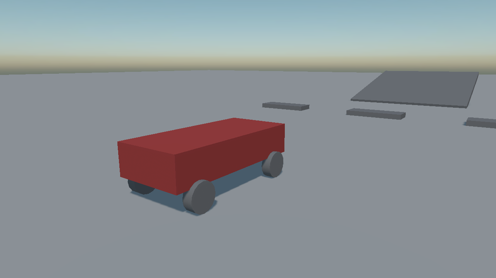

Vehicles
Evergine simulates vehicles as one rigid body with a constraint on it, not as a chassis with four bodies bolted to it. The wheels are not bodies and have no colliders: each one is a ray or a shape cast probing downwards for the ground, with a spring between it and the chassis.
That is why a vehicle holds together at speed, does not shake itself apart on a kerb, and costs about as much to simulate as one crate.
How a vehicle is put together
| Piece | What it is |
|---|---|
| The chassis | An entity with a dynamic RigidBody and one or more colliders. This is the only body in the vehicle. |
| The controller | A WheeledVehicleController or TrackedVehicleController on the same entity. It owns the engine, the gearbox and the driver's input. |
| The wheels | A child entity per wheel, each with a VehicleWheel. Its local position is where the wheel is mounted. |
The controller finds its wheels by walking its descendants, and the order it finds them in is the wheel index the controller's properties refer to.

One chassis body, four wheels that are not bodies at all.
Entity car = new Entity("car")
.AddComponent(new Transform3D() { Position = new Vector3(0f, 1.2f, 0f) })
.AddComponent(new RigidBody()
{
Mass = 1200f,
// Low, and it is the single most important number in the whole vehicle: a car whose centre of
// mass sits at the middle of its box rolls over in the first corner.
CenterOfMassOffset = new Vector3(0f, -0.4f, 0f),
})
.AddComponent(new BoxCollider() { Size = new Vector3(1.8f, 0.8f, 4f) })
.AddComponent(new WheeledVehicleController()
{
FrontWheelLeft = 0,
FrontWheelRight = 1,
RearWheelLeft = 2,
RearWheelRight = 3,
FrontWheelDrive = false,
RearWheelDrive = true,
});
// The four wheels, in the order the indices above refer to.
foreach (var (name, offset, steer) in wheels)
{
car.AddChild(new Entity(name)
.AddComponent(new Transform3D() { LocalPosition = offset })
.AddComponent(new VehicleWheel()
{
Radius = 0.35f,
Width = 0.25f,
MaxSteerAngle = steer,
}));
}
this.Managers.EntityManager.Add(car);
Engine
| Property | Default | Description |
|---|---|---|
| EngineMaxTorque | 500 | The strongest torque the engine makes, in newton-metres. |
| EngineMinRPM | 1000 | Idle speed. |
| EngineMaxRPM | 6000 | The red line. |
| EngineRPM | read-only | What the engine is doing right now: the number a rev counter shows. |
Transmission
| Property | Default | Description |
|---|---|---|
| TransmissionMode | Auto |
Auto changes gear by itself; Manual leaves it to you. |
| GearRatios | 2.66, 1.78, 1.3, 1.0, 0.74 | The forward gears, from first upwards. |
| ReverseGearRatios | -2.9 | The reverse gears. |
| ShiftUpRPM | 4000 | The engine speed an automatic gearbox changes up at. |
| ShiftDownRPM | 2000 | And down at. |
| ClutchStrength | 10 | How firmly the clutch engages. |
| CurrentGear | read-only | The gear it is in. 0 is neutral, negative is reverse. |
Chassis and Collision Testing
| Property | Default | Description |
|---|---|---|
| Up | 0,1,0 | Which way is up for this vehicle. |
| Forward | 0,0,1 | Which way it faces. |
| MaxPitchRollAngle | π/3 (60°) | How far it may tip before the wheels stop gripping. It is what stops an upside-down car driving along on its roof. |
| CollisionTesterType | CastSphere |
How each wheel looks for the ground. |
| Tester | Behaviour |
|---|---|
| Ray | One ray down the suspension. The cheapest, and the one that drops a wheel into every crack in the ground. |
| CastSphere | A sphere swept down the suspension. Rides over small obstacles the way a real tyre does. The default, and the right answer nearly always. |
| CastCylinder | A cylinder swept down. The most accurate on kerbs and steps, and the most expensive. |
Events
| Event | When it fires |
|---|---|
| VehicleStepCompleted | After the vehicle has been stepped, with the step length. |
Important
VehicleStepCompleted fires inside the native step. Read telemetry from it if you must, but do not create or destroy anything, and do not touch other bodies from it.